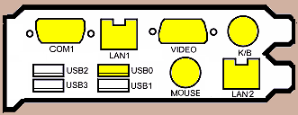
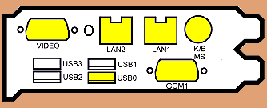
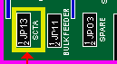

| A message is displayed on the AU asking for a user name and password when hooking a monitor directly to the instrument or making a remote desktop connection.
|
- This Windows XPe and Windows 8 feature cannot be disabled. It occurs the first time the monitor is hooked up to the instrument and anytime after a remote desktop connection is established and the monitor is hooked up to the instrument.
- It also requires the user name and password whenever the user-configurable remote desktop connection is selected.
|
Enter
user for the User Name and
tech for the Password.
Confirm that the correct remote desktop path is selected:
For Windows XP Console:
- Press Windows key and select
.
- Not:
or
.
For Windows 8 Console:
- Press the
Windows key, select the
Remote Desktop Connection icon or type
remote and open the Remote Desktop Connection program.
|
| Message on the AU:
The file ftdibussys on FTDI USB Drivers Disk is needed
With software V5.3.1 and below, might receive the message
Unknown handler error, Motion error, error moving device. and not be able to initialize the AU or move the dual gantry to the sample wheel.
|
- USB cable for dual gantry is not connected
- USB cable is plugged into the wrong port or not connected to the CPU PCB
- USB controller not enabled in CMOS
- System software did not install correctly
|
- Verify the USB cable is connected to the correct port on the CPU PCB.
- Verify the USB cable is connected to JR1 of the USB encoder interface PCB on the dual-gantry sample pipettor.
- Verify the USB controller is enabled in CMOS.
Then, reload the system software on the AU only.
Or alternately, load the driver for the USB. From the AU,
For Windows XP AU:
- Select
. Double-click on
DPInst.exe. Relaunch the AUObj.
For Windows 8 AU:
- Select
. Double-click on
DPInst.exe. Relaunch the AUObj.
Note: The error indicates that the USB hardware was not found when the drivers were loaded during the software install.
|
| DxI tests are not runnable on the DxC console.
|
AAF does not match the APF version.
|
- From the DxC console, select
System Setup.
- Select
Chem Update.
- Select the
AAF option.
- Select
OK.
The AAF files stored on the DxI console during an APF update are transferred to the DxC.
|
| Sample pipettor or dual-gantry pick-and-place motion failure (any axis).
Note: Encoder counts are not displayed in the diagnostics screen for either the sample pipettor or the dual-gantry pick-and-place.
|
- Encoder for the motor is damaged or unplugged.
- Encoder plugged into wrong connector on the USB Encoder PCB for the dual-gantry sample pipettor.
|
- Inspect the encoder wire or connector pins for damage.
- Verify the USB cable is plugged into USB Encoder PCB.
- Verify the encoders are plugged into the correct connectors on the PCB. Starting from the connector closest to the front of the instrument on the USB Encoder PCB the encoders plug-in in this order:
No Encoder
- Pick-and-place x-motor
- Pick-and-place z-motor
- Sample pipettor z-motor
- Sample pipettor x-motor
|
- UCTA is not available Event Log error immediately followed by UCTA is available (recurring).
- UCTA/DxC status icon does not show the software version of the UCTA.
|
UCTA IP address on the DxC console is incorrect.
|
- From the DxC console, select the
System Setup icon.
- Select the system configuration.
- Enter
beckman for the password, and select
Enter.
- Select
Immuno and confirm that the UCTA IP address is 134.217.96.180. Change the address as needed.
Note: If the IP address is changed, reboot the DxC for the changes to take effect.
|
- Status icon on DxI indicates UCTA is unavailable.
- This can occur after CTS is set up (IP addresses are changed) if the CTS is configured after the initial integration.
- DxI AU network cable has been removed and reconnected to the DxC network hub.
- DxI is in the Ready mode.
- UCTA and DxI are in standby on DxC screen.
|
- UCTA communicates with the DxI AU.
- Reconnecting the DxI AU network cable or rebooting the UCTA does not re-establish the UCTA connection to the DxI.
|
Relaunch the AUObj.exe on the DxI AU.
|
- Unable to load software (cannot find the instrument).
- Destination Host Unreachable error when trying to ping the AU.
Note:
- For Windows XP and Windows 8 consoles, if the PC is not connected to a network (hub or AU), a
Destination Host Unreachable error message is received when pinging any address (even the PCs address).
- The LED near the connector on the PC lights up when connected to a network.
|
Network cable is not plugged into correct port on either the console PC or AU.
|
Verify the network cable from the PC to AU is plugged into the correct AU port.
- DxI 800 serial numbers 601433 and above have two network ports on the back of the instrument.
- The network cable connecting the PC to the AU must be plugged into the port labeled PC on the back of the instrument.
|
- Duplicate rack exists on system.
- Sample IDs entered manually and read on the bar code do not match, so the bar code reading will be ignored.
- DxI and DxC sample tube or rack information does not match. Tests will not run.
- Rack XXX has been rejected by the DxC
|
The DxC has a manually programmed rack in its database which was then manually programmed and loaded on the DxI instrument.
|
Delete all rack IDs in the DxC database.
- Select
.
- Enter
1-999 into Racks field.
- Select
to clear the racks.
To prevent the problem in the future:
- Have the customer only manually program on the DxC console (it can then be loaded anywhere without conflicts).
- If the customer insists on manually programming on the DxI, have them program on racks that are set up for DxI only (then the rack will not have seen DxC programming).
- Change the Maximum Sample Program Age on the DxC console to fewer days or hours so that programming clears. Select
, highlight
Maximum Sample Program Age, and set a length based on customer feedback.
|
The instrument status in the upper left corner of the user interface is red without text.
- User interface starts.
- Able to open a Desktop Sharing session with the AU.
- Able to ping the instrument
- Instrument initializes when AUObj.exe is restarted.
|
Windows firewall might have been turned on inadvertently.
|
For Windows XP System:
- Select
and verify the Windows firewall setting is off. Change the setting, if needed.
For Windows 8 System:
- Press
Windows key, select the
Control Panel icon or type
control panel and open the program.
- Open
Windows Firewall program and verify
Windows Firewall state is off.
Note: If the firewall is off, then both
Private networks and
Guest or public networks have a red security image icon with an X inside the icon.
- If
Windows Firewall is turned on, then click on
Turn Windows Firewall on or off on the left side of the Windows Firewall box.
Note: If the firewall is on, then both
Private networks and
Guest or public networks have a green security image icon with a check mark inside the icon.
- Check on
Turn off Windows Firewall for both
Private networksand
Guest or public networks, and select
Ok.
|
- Sample pipettor motor moves in the wrong z-direction when homing.
- Dual-gantry pick-and-place is not found in the device diagnostics screen,
- Cannot select
Integrated System Setup from
System Admin screen,
|
Software does not recognize the dual-gantry sample pipettor.
- The software must recognize two bits on the CTA pick-and-place interface PCB of the dual-gantry to realize a dual-gantry sample pipettor is installed.
- If the motor runs in the opposite direction, the software thinks a standard sample pipettor is installed.
|
Open
InBitTest on the AU, check the status of DualGantryRevBit0 and Dual GantryRevBit1. Low = Dual Gantry present, High = Dual Gantry not recognized. Possible Causes:
- Ribbon cable is not plugged in on either side for the CTA PnP PCB. It should be plugged into J1 on CTA PnP PCB and J13 on the MCC Backplane PCB.
- Defective CTA PnP PCB.
- Defective MCC PCB (MCC #1, second from left).
- Defective ribbon cable.
|
| USB port needed for the dual gantry is damaged on the CPU PCB.
Advantech CPU

Rocky CPU

Atom CPU

|
Port damaged in shipping or sample pump removal.
|
Warning: If the port is damaged, replace the CPU PCB. Use the following solution as a temporary fix only. Software has not tested using a USB port other than the port specified.
- Move the USB cable to an undamaged port on the CPU PCB.
- Close the AUObj.exe on the AU.
- On the AU
For Windows XP AU:
- Select,
, and then double-click on
Subsystem.ini.
For Windows 8 AU:
- Select,
, and then double-click on
Subsystem.ini.
- Search for OpenByDescription until OpenByDescription = No is found under the heading DualGantry.USBEncoderInterface.
- Change the No to Yes and save the file.
- Relaunch AUObj.exe.
Note: Now, the USB is recognized in any port. If the software is reloaded, it changes the setting back to the original port.
|
| Dual-gantry pick-and-place motion error (either axis) without Hold Current for pick-and-place, but sample pipettor not getting errors.
|
- Power harness is not plugged into correct connector on MCC backplane or not plugged into CTA PnP PCB.
- Defective PCB (MCC, CTA PnP, or MCC Backplane)
- Defective power harness
Note: The most likely cause of this issue is that the power harness is plugged into JP03 (labeled Spare) on MCC Backplane.
|
- Verify power harness is plugged into JP13 (labeled SCTA) on MCC Backplane.

- Verify power harness is plugged into the CTA PnP PCB.
- Check the harness for damage or loose pins.
- Swap MCC PCBs.
|
|
DxC Cannot Update Control Lot
This error can cause the user interface to lock-up.
|
DxI constantly queries the DxC for control lot information and is caught in a loop.
|
Clear the stuck sample using Poet Developer/Administrator or Fast Developer/Administrator. Refer to
Software: Database - Clearing DxC Unable to Update Control Lot Error procedure.
|
|
For Windows XP System only:
Windows pop-up occurs when launching the user interface.
- Popup title:
NSPrntUD.EXE - Entry Point Not Found.
- Main message: The procedure entry point GenVersionExfAdolstrcatW could not be located in the dynamic link library KERNEL32.dll.
|
- Registry settings or database pointers do not point to the correct location, likely because of a failure during the software V5.2 or below upgrade.
- The
kernel32.dll file (located in the System32 folder) is corrupt.
|
- Reload 5.2 or below software.
OR
- Save a non-corrupted version of
kernel32.dll from a non-corrupted DxI on Windows XP.
Note: When this message occurred, the successful fix was to reload V5.2 software or below. Replacing the
kernel32.dll file did not resolve the pop-up message.
|
| Attempting a software version upgrade on the DxC and the following error occurs:
Error during Software Upgrade: Can not copy the Acces .csv files.
|
AAF file could be corrupted on the DxC console.
|
Reconnect the DxI PC network cable to the DxC hub (if removed), and update the AAF on the DxC PC.
- From the DxC console, select
System Setup.
- Select
Chem Update
- Select the
AAF option.
- Select
OK.
- Attempt the software version upgrade again.
If the DxI software has been upgraded to a version that is not compatible with the DxC, it is not possible to update the AAF. To recover, attempt the following steps.
For Windows XP console PC DxI Software 5.2 and below:
- Rename the NexGen folder on the PC.
- Delete the
SystemVersion.txt file from the AU folder of the instrument.
- Load the previous version of DxI software that is compatible with the current DxC version.
- Load the APF.
- Update the AAF on the DxC. (Select
, select the
AAF option, and then select
OK.)
- Upgrade both the DxC and DxI to the new software versions.
- Copy the DRW file from the renamed NexGen folder into the C/NexGen/PC folder to restore the original database.
For Windows 8 Mini PC and DxI Software 5.3.1 and above:
- Copy and delete NexGen folder in Local Disk (C:) drive.
- Press
Windows key and select
File Explorer icon or type
file explorerand open the program.
- Navigate to
C:\ NexGen and copy the NexGen folder to the PC desktop.
- Delete the NexGen folder in the Local Disk (C:) drive.
- Delete NexStep folder in Regedit application.
- Press
Windows key and typeregedit and open the program.
- Navigate toHKEYLOCALMACHINE\ Software\Beckman\ Nexstep and delete the Nexstep folder.
- Uninstall DxI Installer in Windows 8 Programs and Features.
- Press
Windows key and open thecontrol panel icon.
- Select
Programs and Features > DxI nstaller > Uninstall > Yes.
- Restart the console PC.
- Create a new AU folder on the AU side.
- Remote Desktop Sharing to the AU side.
- Navigate to the
C:\AU and rename the AU folder to AUold.
- Copy the
specific.ini file from the AUold folder into the new AU folder.
- Reload system software.
- Load the APF.
- Update the AAF on the DxC. (Select
, select the
AAF option, and then select
OK.)
- Upgrade both the DxC and DxI to the new software versions.
- Copy the NexStepBase folder in the DRW folder from the copied NexGen folder into the C/NexGen/PC/DRW folder to restore the original database.
Note: The DxI APF disk contains the AAF. When the APF is loaded on the DxI, the APF stores the AAF file on the DxI PC. When the chemistry is updated on the DxC, the AAF file is copied from the DxI console.
|
| Performing dual-gantry pick-and-place to transfer shuttle alignment and a
Procedure stopped or an error has occurred message appears on the DxC console.
|
- DxI is in
Not Ready mode or is in the Diagnostic screen
- UCTA pick-and-place is not functional.
|
- Verify the DxI is in
Ready mode and is not in the Diagnostic screen.
- If the UCTA pick-and-place is not functional, troubleshoot.
|
| Dual-gantry pick-and-place hits the sample pipettor when moving the pick-and-place to the SPU alignment position (likely to happen only on a DxI 600).
|
Alignment to this position is not completed.
|
Alignment offsets for the dual-gantry are saved in the
subsystem.ini and
specific.ini files in manufacturing, even if the system is not tested with a dual-gantry. On a DxI 600, the offset for the pick-and-place could be too far forward and the sample pipettor might not move far enough to get out of the way.
To resolve this issue, align the pick-and-place to the SPU before trying to move the device into position.
|
| User interface lockups with CLX and CEX flags.
|
DxI user interface is unresponsive when a patient or QC sample is completed that has a CLX (calibrator lot expired) and/or CEX (calibration expired) flag.
|
To resolve the issue, exit and relaunch the DxI user interface multiple times.
|